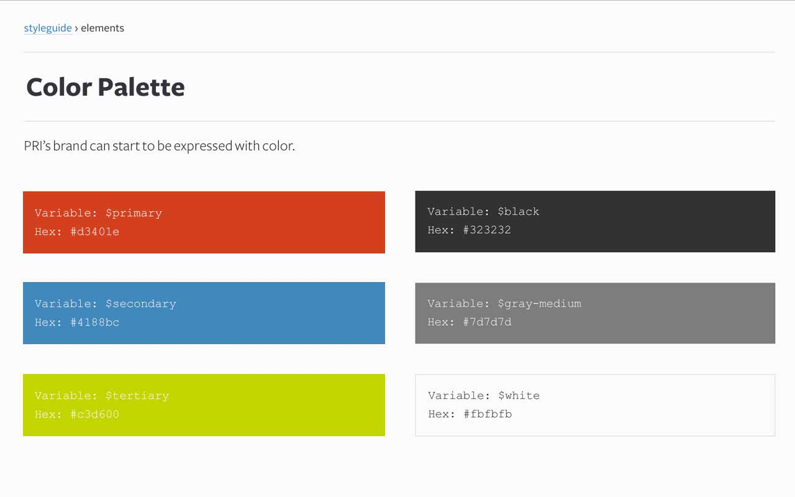
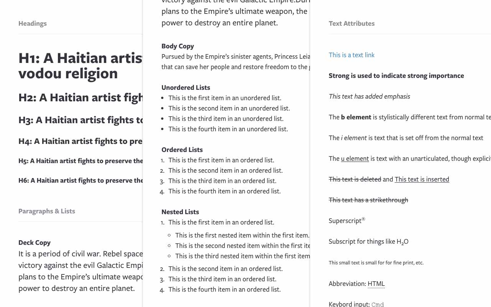
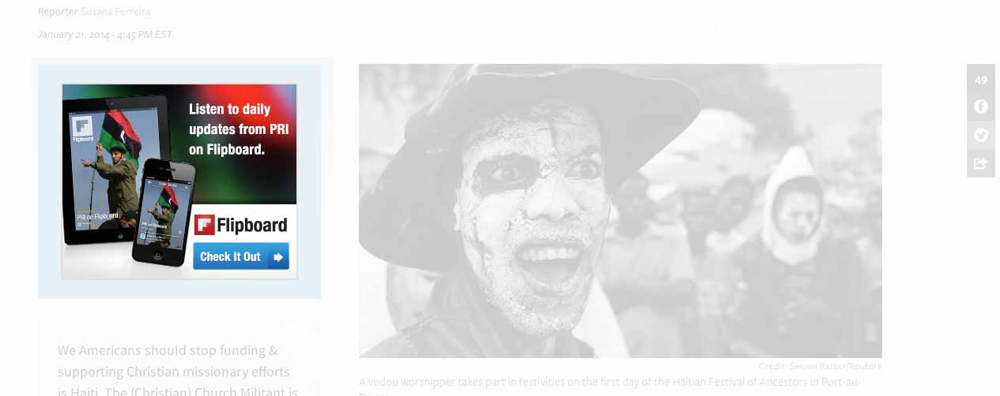
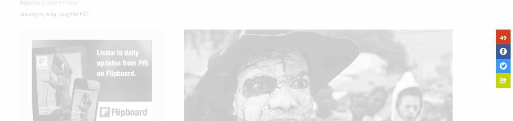
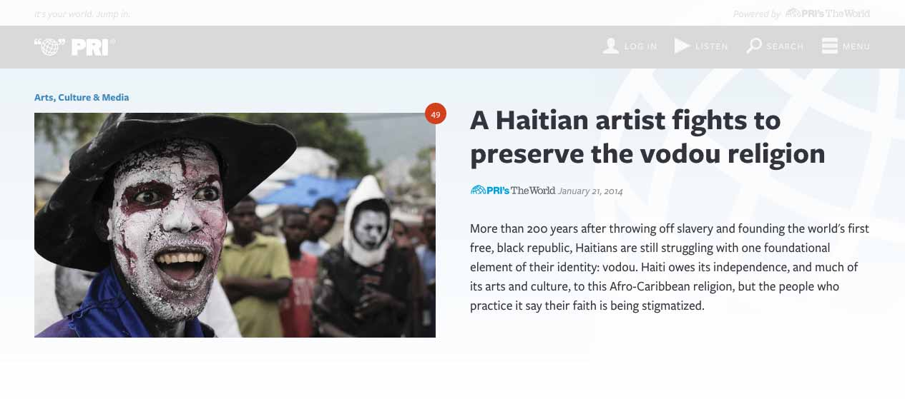
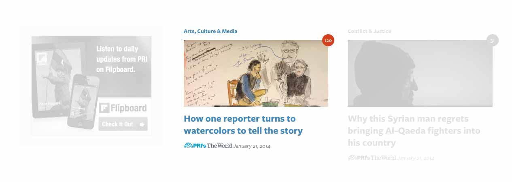
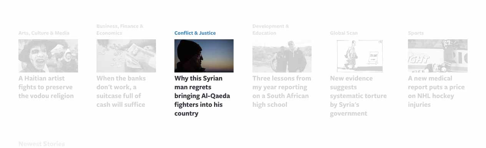
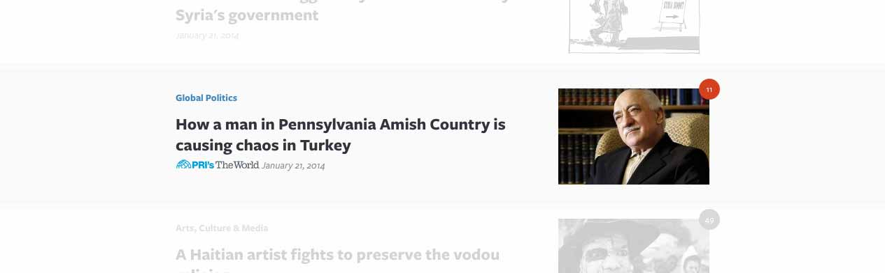

Design Systems, Drupal,
and Beautiful Synergy
Presented by Larry Garfield (@Crell) / Patrick Grady (@patrickgrady)
@Crell
- Senior Architect, Palantir.net
- Drupal 8 Web Services Lead
- Drupal Representative, PHP-FIG
- Advisor, Drupal Association
- Loveable pedant
@patrickgrady
- Senior Designer, Palantir.net
- An aspiring gentleman of Leisure
The Key to Beautiful Synergy
Think Systems, Not Pages.
Why Design in Systems?
- Consistency (Visual + Content)
- Efficiency (Production)
- Sustainability (Life After Us)
sys•tem | ˈsistəm | noun
A set of interconnected parts forming a complex whole.
Interconnected Parts
Elements, Components, Templates
Complex Whole
A CMS-Driven Site
Interconnected Parts
Elements, Components, Templates
H1–H6, p, a, ul, ol, hr, blockquote, form elements, etc.
Interconnected Parts
Elements, Components, Templates
Header, footer, navigation, hero element, call-to-action, etc.
Interconnected Parts
Elements, Components, Templates
General page, home page, landing page, listing page, etc.
Atomic Design
Interconnected Parts
Elements, Components, Templates
Complex Whole
A CMS-Driven Site
Step One
Start at the Beginning
Colors 
Elements: H1–H6, p, a, ul, ol, hr, etc. 
Step Two
Get to Know Your Content
Why are people coming here?
The Story
- Title
- Date
- Section
- Author
- Program
- Lede text
- Body text
- Lede image
- Lede image caption
- Lede image credit
- Program sound clip
- Inline embedded content
- Comments
- Share controls
- Taxonomy
- External links
- Related content
- Newest / Most Commented / Most Shared
- Ad spaces(2)
Step Three
Combine Colors & Elements to Create Components, and Your First Template
Story Header: Date, Author, Title, Program, Section

Ad Block 
Lede Image, caption, credit
Share controls 
Step Four
Make More Templates!
Use what you have learned...
Analyze Your Content
What Should Go on the Home Page?
Why people are coming here Again? For Stories!
The Story
- Title
- Date
- Section
- Author
- Program
- Lede text
- Body text
- Lede image
- Lede image caption
- Lede image credit
- Program sound clip
- Inline embedded content
- Comments
- Share controls
- Taxonomy
- External links
- Related content
- Newest / Most Commented / Most Shared
- Ad spaces(2)
The Story Item
- Title
- Date
- Section
- Program
- Lede text
- Lede image
- Share count
Story Item: Lead Feature  Title, Date, Section, Program, Lede text, Lede image, Share count
Story Item: Square Featured  Title, Date, Section, Program, Lede text, Lede image, Share count
Story Item: Section Newest  Title, Date, Section, Program, Lede text, Lede image, Share count
Story Item: List  Title, Date, Section, Program, Lede text, Lede image, Share count
Story Item: List Compact Title, Date, Section, Program, Lede text, Lede image, Share count
The Good News
Creating Another Page Gets Easier Every Time
What does that have to do with Drupal?
Drupal is based on design systems
Step One
Color and Font
Drupal doesn't care
Step Two
Get to know your content
In the biz, this is called Content Strategy
Specifically, Data Modeling
The Story
- Title
- Date
- Section
- Author
- Program
- Lede text
- Body text
- Lede image
- Lede image caption
- Lede image credit
- Program sound clip
- Inline embedded content
- Comments
- Share controls
- Taxonomy
- External links
- Related content
- Newest / Most Commented / Most Shared
- Ad spaces(2)
Gee that looks familiar!
Build spec
Proper prior planning prevents piss poor performance
Build spec
Step Three
Create components and templates
Component == Visual representation of content
Visual representation of content == Drupal View Mode
Component == View Modes!
Step Four
More components, more templates!
Section Newest
Illustrated small
Views
This is a design tool, too!
Closing Thought
Larry Garfield, Patrick Grady
Making the Web a Better Place
Keep tabs on our work at @Palantir
Want to hear about what we're doing?